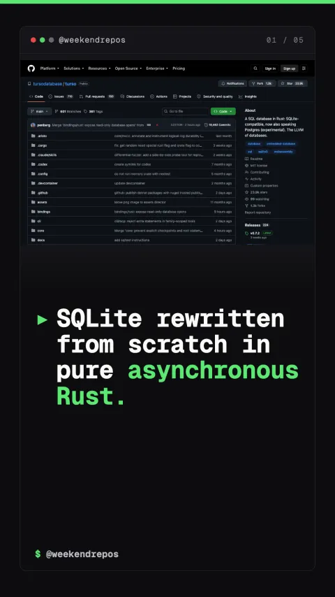

limbo
An open-source async SQLite engine written in pure Rust

SQLite rewritten from scratch in pure asynchronous Rust.
Native asynchronous I/O built on Linux io_uring.
Unlike classic SQLite which blocks OS threads during disk reads, Limbo uses native async I/O and Linux io-uring to achieve non-blocking concurrent database queries.
non-blocking async OLTP · Linux io_uring integration
Pure Rust architecture guarantees full memory safety.
By replacing unsafe pointer arithmetic with Rust's borrow checker, Limbo eliminates use-after-free bugs and buffer overflow vulnerabilities at compile time.
100% safe Rust · zero C runtime dependencies
Full compatibility with existing SQLite database files.
Limbo reads and writes the standard SQLite file format, letting you swap existing embedded databases into modern async web backends with zero data migration.
b-tree compatibility · standard .db file format
Open-source on GitHub with over 10,000 stars.
Limbo is fully open-source under the MIT license, backed by the Turso team for edge and serverless apps.
github.com/tursodatabase/limbo · MIT License